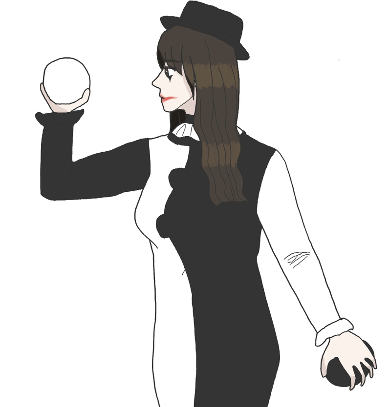

Q. 외모 콤플렉스가 심해요. 다른 사람들은 다 예쁘고 잘생긴 것 같은데 나만 못생긴 것 같아서 열등감이 생기고 주눅이 드네요.

A. 우리는 모두 막 태어났을 땐 예쁘고 잘생기고 못생겼다는 개념 자체가 없습니다.
단지 세상을 살아가면서 미의식이 생기고 예쁘고 잘생기고 못생겼다는 개념이 생기고 심지어 본인의 외모에 대해 남들이 예쁘다 잘생겼다 못났다 이런식으로 평가하는 말도 많이 듣게 됩니다.
외모 콤플렉스는 바로 여기서 생깁니다. 본인 스스로든 남들의 평가에 의해서든, 자신의 외모가 미의 기준에 맞지 않다고 느끼면서 콤플렉스가 됩니다.
하지만 세상에 예쁘고 잘생긴 사람이 많아 보이는 것은 미디어에 나오는 연예인과 인플루언서들이 ‘미친 듯이’ 외모를 관리하기 때문에 그렇게 보이는 것이고, 일반인들은 대체로 여러분과 비슷하고 평범합니다. 정말 미디어에 나오는 사람들 말고도 다들 예쁘고 잘생기고 나만 못난 것 같다면 그건 100% 당신의 열등감입니다.
누구에게나 있는 적당한 열등감이 아닌 본인을 괴롭히는 심각한 열등감을 극복하지 않으면 매사에 주눅들고 자신이 없어지고 인간관계도 안 풀리고 한마디로 되는 일이 없어집니다. 심하면 우울증과 정신 질환에 시달리게 됩니다.
외모 콤플렉스 외에 근본적인 열등감을 극복하는 방법은 ‘열등감 극복, 자존감 회복하는 꿀팁’에서 마저 적겠습니다.
우선 외모 콤플렉스를 극복하려면 남들의 외모 평가를 무시해야 합니다.
누군가는 나를 예쁘다, 잘생겼다, 날씬하다 할 수도 있고, 누군가는 나를 못생겼다, 뚱뚱하다 할 수도 있습니다. 사실 외모 평가는 진심으로 내가 예쁘고 잘생기고 못생겼다고 생각해서 한다기보단 좋은 평가는 그냥 인사말 겸 덕담으로, 나쁜 평가는 그 사람이 단순히 그냥 생각 없고 무례하거나, 평소에 나를 못마땅하게 생각하는 사람일 경우 기분을 상하게 할 의도로 일부러 그러는 것입니다.
즉, 나를 예쁘거나 잘생겼다고 한다면 사회생활 좀 하는 사람이고, 못생겼다고 한다면 가스라이팅입니다. 가스라이팅에 넘어가면 본인만 손해입니다. 그런 무례하고 하찮은 사람의 가스라이팅에 넘어갈 필요가 뭐 있습니까? 그런 사람들 때문에 감정과 인생을 낭비하지 마시기를 바랍니다.